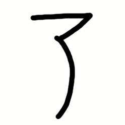

80 kanji N5
日 (にち / Nichi) - Hari, Matahari
Onyomi: ニチ (nichi), ジツ (jitsu)
Kunyomi: ひ (hi), か (ka)
Arti:
Contoh Penggunaan:
- 日曜日 (にちようび / nichiyoubi) - Hari Minggu
- 一日 (いちにち / ichinichi) - Satu hari
- 日光 (にっこう / nikkou) - Sinar matahari
Penjelasan Komposisi:
Kanji 日 adalah piktograf matahari.
Awalnya digambar sebagai lingkaran dengan titik di tengah (🌞), lalu disederhanakan menjadi bentuk kotak.
一 (いち / Ichi) - Satu
Onyomi: イチ (ichi)
Kunyomi: ひと (hito)
Arti:
Contoh Penggunaan:
- 一人 (ひとり / hitori) - Satu orang
- 一番 (いちばん / ichiban) - Nomor satu
- 一月 (いちがつ / ichigatsu) - Januari
Penjelasan Komposisi:
Kanji 一 adalah kanji paling sederhana, terdiri dari satu garis horizontal.
Melambangkan konsep "satu" atau "awal" dalam sistem bilangan.
国 (こく / Koku) - Negara
Onyomi: コク (koku)
Kunyomi: くに (kuni)
Arti:
Contoh Penggunaan:
- 日本国 (にほんこく / nihonkoku) - Negara Jepang
- 外国 (がいこく / gaikoku) - Luar negeri
- 中国 (ちゅうごく / chuugoku) - China
Penjelasan Komposisi:
Kanji 国 terdiri dari:
囗 (perbatasan) + 玉 (permata).
Melambangkan "wilayah yang dibatasi (perbatasan) dan berharga (permata)".
Contoh Kalimat:
- 「中国は大きな国です。」(ちゅうごくはおおきなくにです / Chuugoku wa ookina kuni desu)
= "China adalah negara besar."
人 (じん / Jin) - Orang
Onyomi: ジン (jin), ニン (nin)
Kunyomi: ひと (hito)
Arti:
Contoh Penggunaan:
- 日本人 (にほんじん / nihonjin) - Orang Jepang
- 人々 (ひとびと / hitobito) - Banyak orang
- 人口 (じんこう / jinkou) - Populasi
Penjelasan Komposisi:
Kanji 人 adalah piktograf yang menggambarkan sosok orang dengan dua kaki.
Awalnya ditulis sebagai bentuk sederhana orang berdiri (𠆢), lalu disederhanakan menjadi 人.
Contoh Kalimat:
- 「あの人は優しいです。」(あのひとはやさしいです / Ano hito wa yasashii desu)
= "Orang itu baik hati."
- 「私は日本人です。」(わたしはにほんじんです / Watashi wa nihonjin desu)
= "Saya orang Jepang."
年 (ねん / Nen) - Tahun
Onyomi: ネン (nen)
Kunyomi: とし (toshi)
Arti:
- Tahun
- Usia
- Panen (dalam konteks sejarah)
Contoh Penggunaan:
- 今年 (ことし / kotoshi) - Tahun ini
- 一年 (いちねん / ichinen) - Satu tahun
- 去年 (きょねん / kyonen) - Tahun lalu
Penjelasan Komposisi:
Kanji 年 berasal dari piktograf orang membawa hasil panen (gandum).
Melambangkan "tahun" sebagai siklus panen atau pertanian.
Contoh Kalimat:
- 「今年は2024年です。」(ことしは2024ねんです / Kotoshi wa nisen-nijuu-yo-nen desu)
= "Tahun ini adalah tahun 2024."
- 「私は16歳です。」(わたしは16さいです / Watashi wa juuroku-sai desu)
= "Saya berusia 16 tahun."
大 (だい / Dai) - Besar
Onyomi: ダイ (dai), タイ (tai)
Kunyomi: おお (oo)
Arti:
Contoh Penggunaan:
- 大きい (おおきい / ookii) - Besar
- 大学 (だいがく / daigaku) - Universitas
- 大好き (だいすき / daisuki) - Sangat menyukai
Penjelasan Komposisi:
Kanji 大 adalah piktograf orang dengan tangan dan kaki terbuka lebar.
Melambangkan "ukuran besar" atau "sesuatu yang luas".
Contoh Kalimat:
- 「この部屋は大きいです。」(このへやはおおきいです / Kono heya wa ookii desu)
= "Kamar ini besar."
- 「大学に行きます。」(だいがくにいきます / Daigaku ni ikimasu)
= "Saya pergi ke universitas."
十 (じゅう / Juu) - Sepuluh
Onyomi: ジュウ (juu)
Kunyomi: とお (too)
Arti:
- Sepuluh
- Lengkap (simbol kesempurnaan)
- Persilangan (dalam konteks bentuk)
Contoh Penggunaan:
- 十日 (とおか / tooka) - Sepuluh hari
- 十人 (じゅうにん / juunin) - Sepuluh orang
- 十字路 (じゅうじろ / juujiro) - Persimpangan jalan
Penjelasan Komposisi:
Kanji 十 adalah piktograf dari dua batang kayu yang bersilangan.
Melambangkan angka sepuluh sebagai simbol kelengkapan (10 jari tangan).
Contoh Kalimat:
- 「十日間旅行します。」(とおかかんりょこうします / Tookakan ryokou shimasu)
= "Saya akan traveling selama sepuluh hari."
- 「十字路を右に曲がってください。」(じゅうじろをみぎにまがってください / Juujiro o migi ni magatte kudasai)
= "Belok kanan di persimpangan jalan."
二 (に / Ni) - Dua
Onyomi: ニ (ni)
Kunyomi: ふた (futa)
Arti:
Contoh Penggunaan:
- 二日 (ふつか / futsuka) - Dua hari
- 二人 (ふたり / futari) - Dua orang
- 二月 (にがつ / nigatsu) - Februari
Penjelasan Komposisi:
Kanji 二 adalah piktograf dari dua garis horizontal.
Melambangkan angka dua sebagai kelanjutan dari angka satu (一), dengan menambahkan satu garis lagi.
Contoh Kalimat:
- 「二日目に会議があります。」(ふつかめにかいぎがあります / Futsukame ni kaigi ga arimasu)
= "Ada rapat pada hari kedua."
- 「二人で行きましょう。」(ふたりでいきましょう / Futari de ikimashou)
= "Mari pergi berdua."
本 (ほん / Hon) - Buku, Asal
Onyomi: ホン (hon)
Kunyomi: もと (moto)
Arti:
- Buku
- Asal/akar
- Jepang (dalam kata 日本)
Contoh Penggunaan:
- 本を読む (ほんをよむ / hon o yomu) - Membaca buku
- 日本 (にほん / nihon) - Jepang
- 本物 (ほんもの / honmono) - Asli/original
Penjelasan Komposisi:
Kanji 本 terdiri dari:
木 (pohon) + garis horizontal di bagian bawah.
Melambangkan "akar pohon" (asal) yang berkembang menjadi makna "buku" (sumber pengetahuan).
Contoh Kalimat:
- 「この本は面白いです。」(このほんはおもしろいです / Kono hon wa omoshiroi desu)
= "Buku ini menarik."
- 「日本に行きたいです。」(にほんにいきたいです / Nihon ni ikitai desu)
= "Saya ingin pergi ke Jepang."
中 (ちゅう / Chuu) - Tengah, Di dalam
Onyomi: チュウ (chuu)
Kunyomi: なか (naka)
Arti:
Contoh Penggunaan:
- 中に (なかに / naka ni) - Di dalam
- 中国 (ちゅうごく / chuugoku) - China
- 中心 (ちゅうしん / chuushin) - Pusat
Penjelasan Komposisi:
Kanji 中 adalah piktograf yang menggambarkan garis vertikal di tengah kotak (口).
Melambangkan "tengah" atau "pusat" dari suatu ruang/waktu.
Contoh Kalimat:
- 「箱の中に本があります。」(はこのなかにほんがあります / Hako no naka ni hon ga arimasu)
= "Ada buku di dalam kotak."
- 「中国はアジアの中心です。」(ちゅうごくはアジアのちゅうしんです / Chuugoku wa Ajia no chuushin desu)
= "China adalah pusat Asia."
長 (ちょう / Chou) - Panjang, Pemimpin
Onyomi: チョウ (chou)
Kunyomi: なが (naga)
Arti:
- Panjang
- Pemimpin
- Kepala (dalam konteks organisasi)
Contoh Penggunaan:
- 長い (ながい / nagai) - Panjang
- 長さ (ながさ / nagasa) - Panjang (ukuran)
- 校長 (こうちょう / kouchou) - Kepala sekolah
- 部長 (ぶちょう / buchou) - Kepala departemen
Penjelasan Komposisi:
Kanji 長 adalah piktograf rambut panjang yang diikat.
Melambangkan "panjang" secara fisik, lalu berkembang menjadi makna "pemimpin" (orang yang berpengalaman/berkepala panjang).
Contoh Kalimat:
- 「この川はとても長いです。」(このかわはとてもながいです / Kono kawa wa totemo nagai desu)
= "Sungai ini sangat panjang."
- 「部長は優しい人です。」(ぶちょうはやさしいひとです / Buchou wa yasashii hito desu)
= "Kepala departemen adalah orang yang baik."
出 (しゅつ / Shutsu) - Keluar, Muncul
Onyomi: シュツ (shutsu), スイ (sui)
Kunyomi: で (de), だ (da)
Arti:
- Keluar
- Muncul
- Meninggalkan
Contoh Penggunaan:
- 出口 (でぐち / deguchi) - Pintu keluar
- 出る (でる / deru) - Keluar, pergi
- 出現 (しゅつげん / shutsugen) - Muncul
Penjelasan Komposisi:
Kanji 出 adalah piktograf kaki yang keluar dari gua/ruang tertutup.
Melambangkan aksi "keluar" atau "muncul" dari suatu tempat.
Contoh Kalimat:
- 「ドアから出てください。」(ドアからでてください / Doa kara dete kudasai)
= "Silakan keluar dari pintu."
- 「太陽が雲の間から出た。」(たいようがくものあいだからでた / Taiyou ga kumo no aida kara deta)
= "Matahari muncul dari antara awan."
三 (さん / San) - Tiga
Onyomi: サン (san)
Kunyomi: みっ (mi)
Arti:
Contoh Penggunaan:
- 三日 (みっか / mikka) - Tiga hari
- 三つ (みっつ / mittsu) - Tiga benda
- 三月 (さんがつ / sangatsu) - Maret (bulan ke-3)
Penjelasan Komposisi:
Kanji 三 adalah tiga garis horizontal yang melambangkan angka tiga.
Merupakan kelanjutan dari sistem penghitungan sederhana: 一 (1), 二 (2), 三 (3).
Contoh Kalimat:
- 「三日間旅行します。」(みっかかんりょこうします / Mikka-kan ryokou shimasu)
= "Saya akan bepergian selama tiga hari."
- 「三日月が綺麗です。」(みかづきがきれいです / Mikazuki ga kirei desu)
= "Bulan sabit (hari ke-3 bulan) sangat indah."
- 「三人家族です。」(さんにんかぞくです / Sannin kazoku desu)
= "Keluarga dengan tiga anggota."
時 (じ / Ji) - Waktu
Onyomi: ジ (ji)
Kunyomi: とき (toki)
Arti:
Contoh Penggunaan:
- 時間 (じかん / jikan) - Waktu
- 一時 (いちじ / ichiji) - Pukul satu
- 時々 (ときどき / tokidoki) - Kadang-kadang
Penjelasan Komposisi:
Kanji 時 terdiri dari 日 (matahari/waktu) dan 寺 (kuil).
Gabungan ini melambangkan hubungan antara waktu dan perhitungan jam.
Contoh Kalimat:
- 「今は三時です。」(いまはさんじです / Ima wa sanji desu)
= "Sekarang pukul tiga."
- 「何時に来ますか？」(なんじにきますか / Nanji ni kimasu ka?)
= "Jam berapa kamu akan datang?"
- 「時々公園へ行きます。」(ときどきこうえんへいきます / Tokidoki kouen e ikimasu)
= "Saya kadang-kadang pergi ke taman."
行 (こう / Kou) - Pergi
Onyomi: コウ (kou)
Kunyomi: い (i)
Arti:
Contoh Penggunaan:
Penjelasan Komposisi:
Kanji 行 menggambarkan jalan atau perjalanan, sering dikaitkan dengan gerakan atau tindakan.
Contoh Kalimat:
- 「学校へ行きます。」(がっこうへいきます / Gakkou e ikimasu)
= "Saya pergi ke sekolah."
見 (けん / Ken) - Melihat
Onyomi: ケン (ken)
Kunyomi: み (mi)
Arti:
- Melihat
- Memperhatikan
- Menunjukkan
Contoh Penggunaan:
- 見る (みる / miru) - Melihat
- 見学 (けんがく / kengaku) - Studi tur
- 見物 (けんぶつ / kenbutsu) - Tontonan/sightseeing
- 発見 (はっけん / hakken) - Penemuan
Penjelasan Komposisi:
Kanji 見 terdiri dari:
目 (mata) + 儿 (kaki/orang berdiri).
Melambangkan "orang yang berdiri dan menggunakan mata untuk melihat".
Contoh Kalimat:
- 「窓の外を見てください。」(まどのそとをみてください / Mado no soto o mite kudasai)
= "Tolong lihat ke luar jendela."
- 「博物館を見学しました。」(はくぶつかんをけんがくしました / Hakubutsukan o kengaku shimashita)
= "Saya mengunjungi museum untuk studi tur."
月 (げつ / Getsu) - Bulan
Onyomi: ゲツ (getsu), ガツ (gatsu)
Kunyomi: つき (tsuki)
Arti:
- Bulan (satelit alami Bumi)
- Bulan (periode waktu)
- Bulanan (dalam konteks waktu)
Contoh Penggunaan:
- 月曜日 (げつようび / getsuyoubi) - Hari Senin
- 一月 (いちがつ / ichigatsu) - Januari
- 月見 (つきみ / tsukimi) - Melihat bulan (festival bulan purnama)
- 今月 (こんげつ / kongetsu) - Bulan ini
Penjelasan Komposisi:
Kanji 月 adalah piktograf bulan sabit.
Awalnya digambar sebagai bentuk bulan sabit (🌙), lalu disederhanakan menjadi bentuk kotak.
Contoh Kalimat:
- 「月が綺麗ですね。」(つきがきれいですね / Tsuki ga kirei desu ne)
= "Bulan indah, ya."
- 「来月日本に行きます。」(らいげつにほんにいきます / Raigetsu Nihon ni ikimasu)
= "Saya akan pergi ke Jepang bulan depan."
後 (ご / Go) - Belakang, Setelah
Onyomi: ゴ (go), コウ (kou)
Kunyomi: うし (ushi), あと (ato)
Arti:
Contoh Penggunaan:
- 後ろ (うしろ / ushiro) - Belakang
- 後で (あとで / ato de) - Nanti
- 午後 (ごご / gogo) - Siang/sore hari
- 最後 (さいご / saigo) - Terakhir
Penjelasan Komposisi:
Kanji 後 terdiri dari:
彳 (jalan) + 夂 (kaki yang bergerak lambat).
Melambangkan "sesuatu yang berada di belakang atau terjadi setelahnya".
Contoh Kalimat:
- 「後ろを見てください。」(うしろをみてください / Ushiro o mite kudasai)
= "Tolong lihat ke belakang."
- 「後で電話します。」(あとででんわします / Ato de denwa shimasu)
= "Saya akan menelepon nanti."
前 (ぜん / Zen) - Depan, Sebelum
Onyomi: ゼン (zen)
Kunyomi: まえ (mae)
Arti:
Contoh Penggunaan:
- 前に (まえに / mae ni) - Di depan
- 前回 (ぜんかい / zenkai) - Kali sebelumnya
- 午前 (ごぜん / gozen) - Pagi hari
- 前進 (ぜんしん / zenshin) - Maju, bergerak ke depan
Penjelasan Komposisi:
Kanji 前 terdiri dari:
丷 (tanduk) + 刀 (pisau) + 止 (berhenti).
Melambangkan "sesuatu yang berada di depan atau terjadi sebelumnya".
Contoh Kalimat:
- 「前に進んでください。」(まえにすすんでください / Mae ni susunde kudasai)
= "Silakan maju ke depan."
- 「前回のテストは難しかったです。」(ぜんかいのテストはむずかしかったです / Zenkai no tesuto wa muzukashikatta desu)
= "Tes sebelumnya sulit."
生 (せい / Sei) - Hidup, Lahir
Onyomi: セイ (sei), ショウ (shou)
Kunyomi: い (i), う (u), なま (nama)
Arti:
- Hidup
- Lahir
- Mentah (belum dimasak)
Contoh Penggunaan:
- 生活 (せいかつ / seikatsu) - Kehidupan
- 生まれる (うまれる / umareru) - Lahir
- 生魚 (なまざかな / namazakana) - Ikan mentah
- 誕生日 (たんじょうび / tanjoubi) - Ulang tahun
Penjelasan Komposisi:
Kanji 生 adalah piktograf tunas tanaman yang tumbuh dari tanah.
Melambangkan "kehidupan" atau "sesuatu yang baru lahir/muncul".
Contoh Kalimat:
- 「新しい命が生まれました。」(あたらしいいのちがうまれました / Atarashii inochi ga umaremashita)
= "Kehidupan baru telah lahir."
- 「生魚を食べます。」(なまざかなをたべます / Namazakana o tabemasu)
= "Saya makan ikan mentah."
五 (ご / Go) - Lima
Onyomi: ゴ (go)
Kunyomi: いつ (itsu)
Arti:
Contoh Penggunaan:
- 五日 (いつか / itsuka) - Lima hari
- 五つ (いつつ / itsutsu) - Lima benda
- 五月 (ごがつ / gogatsu) - Mei (bulan ke-5)
- 五円玉 (ごえんだま / goendama) - Koin 5 yen
Penjelasan Komposisi:
Kanji 五 adalah piktograf dari lima garis horizontal.
Melambangkan angka lima sebagai kelanjutan dari sistem penghitungan sederhana: 一 (1), 二 (2), 三 (3), 四 (4), 五 (5).
Contoh Kalimat:
- 「五日間休みます。」(いつかかんやすみます / Itsuka-kan yasumimasu)
= "Saya akan libur selama lima hari."
- 「五つのりんごを買いました。」(いつつのりんごをかいました / Itsutsu no ringo o kaimashita)
= "Saya membeli lima apel."
間 (かん / Kan) - Jarak, Ruang, Waktu
Onyomi: カン (kan), ケン (ken)
Kunyomi: あいだ (aida), ま (ma)
Arti:
- Jarak
- Ruang
- Waktu
- Interval
Contoh Penggunaan:
- 時間 (じかん / jikan) - Waktu
- 人間 (にんげん / ningen) - Manusia
- 間違い (まちがい / machigai) - Kesalahan
- 昼間 (ひるま / hiruma) - Siang hari
Penjelasan Komposisi:
Kanji 間 terdiri dari:
門 (pintu gerbang) + 日 (matahari).
Melambangkan "cahaya matahari yang masuk melalui celah pintu", yang berarti "ruang/waktu di antara dua hal".
Contoh Kalimat:
- 「時間がありますか？」(じかんがありますか？ / Jikan ga arimasu ka?)
= "Apakah Anda punya waktu?"
- 「木の間に鳥がいます。」(きのあいだにとりがいます / Ki no aida ni tori ga imasu)
= "Ada burung di antara pohon-pohon."
上 (じょう / Jou) - Atas
Onyomi: ジョウ (jou)
Kunyomi: うえ (ue), あ (a)
Arti:
Contoh Penggunaan:
- 上に (うえに / ue ni) - Di atas
- 上手 (じょうず / jouzu) - Pandai
- 上る (のぼる / noboru) - Naik
- 上着 (うわぎ / uwagi) - Jaket
Penjelasan Komposisi:
Kanji 上 adalah piktograf yang menggambarkan tangan yang mengangkat sesuatu ke atas.
Melambangkan "arah ke atas" atau "posisi yang lebih tinggi".
Contoh Kalimat:
- 「机の上に本があります。」(つくえのうえにほんがあります / Tsukue no ue ni hon ga arimasu)
= "Ada buku di atas meja."
- 「彼はピアノが上手です。」(かれはピアノがじょうずです / Kare wa piano ga jouzu desu)
= "Dia pandai bermain piano."
東 (とう / Tou) - Timur
Onyomi: トウ (tou)
Kunyomi: ひがし (higashi)
Arti:
- Timur
- Arah matahari terbit
Contoh Penggunaan:
- 東 (ひがし / higashi) - Timur
- 東京 (とうきょう / toukyou) - Tokyo
- 東部 (とうぶ / toubu) - Wilayah timur
Penjelasan Komposisi:
Kanji 東 terdiri dari:
木 (pohon) + 日 (matahari).
Melambangkan "matahari terbit di balik pohon", yang berarti "timur".
Contoh Kalimat:
- 「東に太陽が昇ります。」(ひがしにたいようがのぼります / Higashi ni taiyou ga noborimasu)
= "Matahari terbit di timur."
- 「東京は日本の首都です。」(とうきょうはにほんのしゅとです / Toukyou wa Nihon no shuto desu)
= "Tokyo adalah ibu kota Jepang."
四 (し / Shi) - Empat
Onyomi: シ (shi)
Kunyomi: よん (yon), よ (yo)
Arti:
- Empat
- Keempat
- Jumlah empat
Contoh Penggunaan:
- 四日 (よっか / yokka) - Empat hari
- 四人 (よにん / yonin) - Empat orang
- 四月 (しがつ / shigatsu) - April (bulan ke-4)
- 四角 (しかく / shikaku) - Bentuk persegi
Penjelasan Komposisi:
Kanji 四 adalah piktograf dari empat garis yang melambangkan angka empat.
Awalnya ditulis sebagai empat garis horizontal, lalu disederhanakan menjadi bentuk saat ini.
Contoh Kalimat:
- 「四日間休みます。」(よっかかんやすみます / Yokka-kan yasumimasu)
= "Saya akan libur selama empat hari."
- 「四人で行きます。」(よにんでいきます / Yonin de ikimasu)
= "Kami pergi berempat."
今 (いま / Ima) - Sekarang
Onyomi: コン (kon)
Kunyomi: いま (ima)
Arti:
Contoh Penggunaan:
- 今 (いま / ima) - Sekarang
- 今日 (きょう / kyou) - Hari ini
- 今週 (こんしゅう / konshuu) - Minggu ini
Penjelasan Komposisi:
Kanji 今 adalah piktograf yang menggambarkan "tangan yang memegang sesuatu pada saat ini".
Melambangkan "waktu sekarang" atau "momen saat ini".
Contoh Kalimat:
- 「今何時ですか？」(いまなんじですか / Ima nanji desu ka?)
= "Sekarang jam berapa?"
- 「今日は忙しいです。」(きょうはいそがしいです / Kyou wa isogashii desu)
= "Hari ini saya sibuk."
金 (きん / Kin) - Emas, Uang
Onyomi: キン (kin), コン (kon)
Kunyomi: かね (kane)
Arti:
Contoh Penggunaan:
- お金 (おかね / okane) - Uang
- 金曜日 (きんようび / kinyoubi) - Hari Jumat
- 金色 (きんいろ / kin'iro) - Warna emas
Penjelasan Komposisi:
Kanji 金 adalah piktograf yang menggambarkan "logam yang dicetak".
Melambangkan "emas" atau "uang" sebagai simbol kekayaan.
Contoh Kalimat:
- 「お金を持っていますか？」(おかねをもっていますか / Okane o motteimasu ka?)
= "Apakah Anda membawa uang?"
- 「金曜日に会いましょう。」(きんようびにあいましょう / Kinyoubi ni aimashou)
= "Mari bertemu pada hari Jumat."
九 (きゅう / Kyuu) - Sembilan
Onyomi: キュウ (kyuu)
Kunyomi: ここの (kokono)
Arti:
- Sembilan
- Kesembilan
- Jumlah sembilan
Contoh Penggunaan:
- 九日 (ここのか / kokonoka) - Sembilan hari
- 九つ (ここのつ / kokonotsu) - Sembilan benda
- 九月 (くがつ / kugatsu) - September (bulan ke-9)
Penjelasan Komposisi:
Kanji 九 adalah piktograf yang menggambarkan "tangan yang memegang sesuatu dengan bentuk melengkung".
Melambangkan angka sembilan sebagai kelanjutan dari sistem penghitungan sederhana.
Contoh Kalimat:
- 「九日間休みます。」(ここのかかんやすみます / Kokonoka-kan yasumimasu)
= "Saya akan libur selama sembilan hari."
- 「九つのりんごを買いました。」(ここのつのりんごをかいました / Kokonotsu no ringo o kaimashita)
= "Saya membeli sembilan apel."
入 (にゅう / Nyuu) - Masuk
Onyomi: ニュウ (nyuu)
Kunyomi: はい (hai), い (i)
Arti:
Contoh Penggunaan:
- 入る (はいる / hairu) - Masuk
- 入学 (にゅうがく / nyuugaku) - Masuk sekolah
- 入口 (いりぐち / iriguchi) - Pintu masuk
Penjelasan Komposisi:
Kanji 入 adalah piktograf yang menggambarkan "sesuatu yang masuk ke dalam".
Melambangkan aksi "masuk" atau "memasukkan".
Contoh Kalimat:
- 「部屋に入ってください。」(へやにはいってください / Heya ni haitte kudasai)
= "Silakan masuk ke dalam ruangan."
- 「学校に入学します。」(がっこうににゅうがくします / Gakkou ni nyuugaku shimasu)
= "Saya akan masuk sekolah."
高 (こう / Kou) - Tinggi
Onyomi: コウ (kou)
Kunyomi: たか (taka)
Arti:
- Tinggi
- Mahal
- Kualitas tinggi
Contoh Penggunaan:
- 高い (たかい / takai) - Tinggi, mahal
- 高校 (こうこう / koukou) - Sekolah menengah atas
- 高さ (たかさ / takasa) - Tinggi (ukuran)
Penjelasan Komposisi:
Kanji 高 adalah piktograf yang menggambarkan "menara yang tinggi".
Melambangkan "ketinggian" atau "sesuatu yang berada di atas".
Contoh Kalimat:
- 「この山は高いです。」(このやまはたかいです / Kono yama wa takai desu)
= "Gunung ini tinggi."
- 「この本は高いです。」(このほんはたかいです / Kono hon wa takai desu)
= "Buku ini mahal."
学 (がく / Gaku) - Belajar
Onyomi: ガク (gaku)
Kunyomi: まな (mana)
Arti:
Contoh Penggunaan:
- 勉強 (べんきょう / benkyou) - Belajar
- 学校 (がっこう / gakkou) - Sekolah
- 学生 (がくせい / gakusei) - Siswa/mahasiswa
Penjelasan Komposisi:
Kanji 学 terdiri dari:
子 (anak) + 冖 (atap/tempat).
Melambangkan "anak yang belajar di bawah atap (sekolah)".
Contoh Kalimat:
- 「毎日勉強します。」(まいにちべんきょうします / Mainichi benkyou shimasu)
= "Saya belajar setiap hari."
- 「学校に行きます。」(がっこうにいきます / Gakkou ni ikimasu)
= "Saya pergi ke sekolah."
円 (えん / En) - Lingkaran, Yen
Onyomi: エン (en)
Kunyomi: まる (maru)
Arti:
- Lingkaran
- Yen (mata uang Jepang)
- Bulat
Contoh Penggunaan:
- 円い (まるい / marui) - Bulat
- 円形 (えんけい / enkei) - Bentuk lingkaran
- 千円 (せんえん / sen'en) - Seribu yen
Penjelasan Komposisi:
Kanji 円 adalah piktograf yang menggambarkan "bentuk lingkaran".
Melambangkan "lingkaran" atau "sesuatu yang bulat".
Juga digunakan sebagai simbol mata uang Jepang (yen).
Contoh Kalimat:
- 「このコインは円いです。」(このコインはまるいです / Kono koin wa marui desu)
= "Koin ini bulat."
- 「千円を払います。」(せんえんをはらいます / Sen'en o haraimasu)
= "Saya akan membayar seribu yen."
外 (がい / Gai) - Diluar
Onyomi: ガイ (gai), ゲ (ge)
Kunyomi: そと (soto), はず (hazu)
Arti:
- Diluar
- Luar negeri
- Tidak termasuk
Contoh Penggunaan:
- 外 (そと / soto) - Diluar
- 外国 (がいこく / gaikoku) - Luar negeri
- 外出 (がいしゅつ / gaishutsu) - Keluar rumah
Penjelasan Komposisi:
Kanji 外 terdiri dari:
夕 (malam) + 卜 (ramalan).
Melambangkan "sesuatu yang berada di luar" atau "tidak termasuk".
Contoh Kalimat:
- 「外は寒いです。」(そとはさむいです / Soto wa samui desu)
= "Diluar dingin."
- 「外国に行きたいです。」(がいこくにいきたいです / Gaikoku ni ikitai desu)
= "Saya ingin pergi ke luar negeri."
子 (こ / Ko) - Anak

Onyomi: シ (shi), ス (su)
Kunyomi: こ (ko)
Arti:
- Anak
- Anak kecil
- Keturunan
Contoh Penggunaan:
- 子供 (こども / kodomo) - Anak-anak
- 女子 (じょし / joshi) - Perempuan
- 王子 (おうじ / ouji) - Pangeran
Penjelasan Komposisi:
Kanji 子 adalah piktograf yang menggambarkan "anak kecil dengan kepala besar".
Melambangkan "anak" atau "keturunan".
Contoh Kalimat:
- 「子供は元気です。」(こどもはげんきです / Kodomo wa genki desu)
= "Anak-anak sehat."
- 「女子学生です。」(じょしがくせいです / Joshi gakusei desu)
= "Saya adalah siswa perempuan."
八 (はち / Hachi) - Delapan
Onyomi: ハチ (hachi)
Kunyomi: や (ya), やっ (yatsu)
Arti:
- Delapan
- Kedelapan
- Jumlah delapan
Contoh Penggunaan:
- 八日 (ようか / youka) - Delapan hari
- 八つ (やっつ / yattsu) - Delapan benda
- 八月 (はちがつ / hachigatsu) - Agustus (bulan ke-8)
Penjelasan Komposisi:
Kanji 八 adalah piktograf yang menggambarkan "dua garis yang terpisah".
Melambangkan angka delapan sebagai kelanjutan dari sistem penghitungan sederhana.
Contoh Kalimat:
- 「八日間休みます。」(ようかかんやすみます / Youka-kan yasumimasu)
= "Saya akan libur selama delapan hari."
- 「八つのりんごを買いました。」(やっつのりんごをかいました / Yattsu no ringo o kaimashita)
= "Saya membeli delapan apel."
六 (ろく / Roku) - Enam
Onyomi: ロク (roku)
Kunyomi: むっ (mutsu), む (mu)
Arti:
Contoh Penggunaan:
- 六日 (むいか / muika) - Enam hari
- 六つ (むっつ / muttsu) - Enam benda
- 六月 (ろくがつ / rokugatsu) - Juni (bulan ke-6)
Penjelasan Komposisi:
Kanji 六 adalah piktograf yang menggambarkan "tangan yang memegang sesuatu dengan enam jari".
Melambangkan angka enam sebagai kelanjutan dari sistem penghitungan sederhana.
Contoh Kalimat:
- 「六日間旅行します。」(むいかかんりょこうします / Muika-kan ryokou shimasu)
= "Saya akan bepergian selama enam hari."
- 「六つのりんごを買いました。」(むっつのりんごをかいました / Muttsu no ringo o kaimashita)
= "Saya membeli enam apel."
下 (した / Shita) - Dibawah
Onyomi: カ (ka), ゲ (ge)
Kunyomi: した (shita), しも (shimo)
Arti:
Contoh Penggunaan:
- 下に (したに / shita ni) - Dibawah
- 地下 (ちか / chika) - Bawah tanah
- 下がる (さがる / sagaru) - Turun
Penjelasan Komposisi:
Kanji 下 adalah piktograf yang menggambarkan "sesuatu yang berada di bawah".
Melambangkan "posisi yang lebih rendah" atau "arah ke bawah".
Contoh Kalimat:
- 「机の下に猫がいます。」(つくえのしたにねこがいます / Tsukue no shita ni neko ga imasu)
= "Ada kucing di bawah meja."
- 「温度が下がります。」(おんどがさがります / Ondo ga sagarimasu)
= "Suhu akan turun."
来 (らい / Rai) - Datang
Onyomi: ライ (rai)
Kunyomi: く (ku), きた (kita)
Arti:
- Datang
- Mendatang
- Masa depan
Contoh Penggunaan:
- 来る (くる / kuru) - Datang
- 来週 (らいしゅう / raishuu) - Minggu depan
- 未来 (みらい / mirai) - Masa depan
Penjelasan Komposisi:
Kanji 来 adalah piktograf yang menggambarkan "orang yang datang".
Melambangkan "aksi datang" atau "sesuatu yang akan terjadi di masa depan".
Contoh Kalimat:
- 「明日来ます。」(あしたきます / Ashita kimasu)
= "Saya akan datang besok."
- 「来週会いましょう。」(らいしゅうあいましょう / Raishuu aimashou)
= "Mari bertemu minggu depan."
気 (き / Ki) - Semangat, Energi
Onyomi: キ (ki), ケ (ke)
Kunyomi: -
Arti:
Contoh Penggunaan:
- 元気 (げんき / genki) - Sehat, bersemangat
- 気持ち (きもち / kimochi) - Perasaan
- 天気 (てんき / tenki) - Cuaca
Penjelasan Komposisi:
Kanji 気 adalah piktograf yang menggambarkan "uap yang naik".
Melambangkan "energi" atau "semangat" yang mengalir dalam diri seseorang.
Contoh Kalimat:
- 「元気ですか？」(げんきですか / Genki desu ka?)
= "Apakah Anda baik-baik saja?"
- 「気持ちがいいです。」(きもちがいいです / Kimochi ga ii desu)
= "Perasaannya enak."
小 (しょう / Shou) - Kecil
Onyomi: ショウ (shou)
Kunyomi: ちい (chii), こ (ko)
Arti:
Contoh Penggunaan:
- 小さい (ちいさい / chiisai) - Kecil
- 小学生 (しょうがくせい / shougakusei) - Siswa sekolah dasar
- 小川 (おがわ / ogawa) - Sungai kecil
Penjelasan Komposisi:
Kanji 小 adalah piktograf yang menggambarkan "tiga titik kecil".
Melambangkan "sesuatu yang kecil" atau "sedikit".
Contoh Kalimat:
- 「この箱は小さいです。」(このはこはちいさいです / Kono hako wa chiisai desu)
= "Kotak ini kecil."
- 「小学生です。」(しょうがくせいです / Shougakusei desu)
= "Saya adalah siswa sekolah dasar."
七 (しち / Shichi) - Tujuh
Onyomi: シチ (shichi)
Kunyomi: なな (nana)
Arti:
- Tujuh
- Ketujuh
- Jumlah tujuh
Contoh Penggunaan:
- 七日 (なのか / nanoka) - Tujuh hari
- 七つ (ななつ / nanatsu) - Tujuh benda
- 七月 (しちがつ / shichigatsu) - Juli (bulan ke-7)
Penjelasan Komposisi:
Kanji 七 adalah piktograf yang menggambarkan "tujuh garis".
Melambangkan angka tujuh sebagai kelanjutan dari sistem penghitungan sederhana.
Contoh Kalimat:
- 「七日間休みます。」(なのかかんやすみます / Nanoka-kan yasumimasu)
= "Saya akan libur selama tujuh hari."
- 「七つのりんごを買いました。」(ななつのりんごをかいました / Nanatsu no ringo o kaimashita)
= "Saya membeli tujuh apel."
山 (さん / San) - Gunung
Onyomi: サン (san)
Kunyomi: やま (yama)
Arti:
Contoh Penggunaan:
- 山 (やま / yama) - Gunung
- 火山 (かざん / kazan) - Gunung berapi
- 登山 (とざん / tozan) - Mendaki gunung
Penjelasan Komposisi:
Kanji 山 adalah piktograf yang menggambarkan "tiga puncak gunung".
Melambangkan "gunung" atau "bukit".
Contoh Kalimat:
- 「富士山は高いです。」(ふじさんはたかいです / Fujisan wa takai desu)
= "Gunung Fuji tinggi."
- 「山に登ります。」(やまにのぼります / Yama ni noborimasu)
= "Saya akan mendaki gunung."
話 (わ / Wa) - Bicara
Onyomi: ワ (wa)
Kunyomi: はな (hana)
Arti:
Contoh Penggunaan:
- 話す (はなす / hanasu) - Bicara
- 会話 (かいわ / kaiwa) - Percakapan
- 物語 (ものがたり / monogatari) - Cerita
Penjelasan Komposisi:
Kanji 話 terdiri dari:
言 (kata) + 舌 (lidah).
Melambangkan "bicara" atau "cerita yang diucapkan".
Contoh Kalimat:
- 「友達と話します。」(ともだちとはなします / Tomodachi to hanashimasu)
= "Saya berbicara dengan teman."
- 「面白い話を聞きました。」(おもしろいはなしをききました / Omoshiroi hanashi o kikimashita)
= "Saya mendengar cerita yang menarik."
女 (じょ / Jo) - Wanita
Onyomi: ジョ (jo), ニョ (nyo)
Kunyomi: おんな (onna)
Arti:
Contoh Penggunaan:
- 女の子 (おんなのこ / onna no ko) - Anak perempuan
- 女性 (じょせい / josei) - Wanita
- 女神 (めがみ / megami) - Dewi
Penjelasan Komposisi:
Kanji 女 adalah piktograf yang menggambarkan "wanita yang sedang duduk".
Melambangkan "wanita" atau "perempuan".
Contoh Kalimat:
- 「彼女は優しいです。」(かのじょはやさしいです / Kanojo wa yasashii desu)
= "Dia (wanita) baik hati."
- 「女性の先生です。」(じょせいのせんせいです / Josei no sensei desu)
= "Dia adalah guru perempuan."
北 (きた / Kita) - Utara
Onyomi: ホク (hoku)
Kunyomi: きた (kita)
Arti:
Contoh Penggunaan:
- 北 (きた / kita) - Utara
- 北海道 (ほっかいどう / Hokkaidou) - Hokkaido (wilayah utara Jepang)
- 北風 (きたかぜ / kitakaze) - Angin utara
Penjelasan Komposisi:
Kanji 北 adalah piktograf yang menggambarkan "dua orang yang saling membelakangi".
Melambangkan "arah utara" sebagai lawan dari selatan.
Contoh Kalimat:
- 「北は寒いです。」(きたはさむいです / Kita wa samui desu)
= "Utara itu dingin."
- 「北海道に行きたいです。」(ほっかいどうにいきたいです / Hokkaidou ni ikitai desu)
= "Saya ingin pergi ke Hokkaido."
百 (ひゃく / Hyaku) - Ratusan
Onyomi: ヒャク (hyaku)
Kunyomi: もも (momo)
Arti:
Contoh Penggunaan:
- 百 (ひゃく / hyaku) - Seratus
- 百円 (ひゃくえん / hyakuen) - Seratus yen
- 百人 (ひゃくにん / hyakunin) - Seratus orang
Penjelasan Komposisi:
Kanji 百 adalah piktograf yang menggambarkan "seratus".
Melambangkan angka seratus sebagai kelanjutan dari sistem penghitungan.
Contoh Kalimat:
- 「百円を持っています。」(ひゃくえんをもっています / Hyakuen o motteimasu)
= "Saya memiliki seratus yen."
- 「百人が集まりました。」(ひゃくにんがあつまりました / Hyakunin ga atsumarimashita)
= "Seratus orang berkumpul."
書 (しょ / Sho) - Menulis
Onyomi: ショ (sho)
Kunyomi: か (ka)
Arti:
Contoh Penggunaan:
- 書く (かく / kaku) - Menulis
- 辞書 (じしょ / jisho) - Kamus
- 書道 (しょどう / shodou) - Kaligrafi
Penjelasan Komposisi:
Kanji 書 terdiri dari:
聿 (kuas) + 日 (matahari).
Melambangkan "tindakan menulis" atau "membuat catatan".
Contoh Kalimat:
- 「手紙を書きます。」(てがみをかきます / Tegami o kakimasu)
= "Saya menulis surat."
- 「辞書を使います。」(じしょをつかいます / Jisho o tsukaimasu)
= "Saya menggunakan kamus."
先 (さき / Saki) - Depan, Sebelumnya
Onyomi: セン (sen)
Kunyomi: さき (saki)
Arti:
- Depan
- Sebelumnya
- Masa depan
Contoh Penggunaan:
- 先に (さきに / saki ni) - Lebih dulu
- 先生 (せんせい / sensei) - Guru
- 先月 (せんげつ / sengetsu) - Bulan lalu
Penjelasan Komposisi:
Kanji 先 terdiri dari:
儿 (kaki/orang) + 土 (tanah).
Melambangkan "sesuatu yang berada di depan" atau "sebelumnya".
Contoh Kalimat:
- 「先に食べてください。」(さきにたべてください / Saki ni tabete kudasai)
= "Silakan makan lebih dulu."
- 「先生は優しいです。」(せんせいはやさしいです / Sensei wa yasashii desu)
= "Guru itu baik hati."
名 (めい / Mei) - Nama
Onyomi: メイ (mei), ミョウ (myou)
Kunyomi: な (na)
Arti:
Contoh Penggunaan:
- 名前 (なまえ / namae) - Nama
- 有名 (ゆうめい / yuumei) - Terkenal
- 名刺 (めいし / meishi) - Kartu nama
Penjelasan Komposisi:
Kanji 名 terdiri dari:
夕 (malam) + 口 (mulut).
Melambangkan "nama" sebagai sesuatu yang diucapkan atau dikenal.
Contoh Kalimat:
- 「名前は何ですか？」(なまえはなんですか / Namae wa nan desu ka?)
= "Siapa nama Anda?"
- 「彼は有名です。」(かれはゆうめいです / Kare wa yuumei desu)
= "Dia terkenal."
川 (かわ / Kawa) - Sungai
Onyomi: セン (sen)
Kunyomi: かわ (kawa)
Arti:
Contoh Penggunaan:
- 川 (かわ / kawa) - Sungai
- 河川 (かせん / kasen) - Sungai (formal)
- 川辺 (かわべ / kawabe) - Pinggir sungai
Penjelasan Komposisi:
Kanji 川 adalah piktograf yang menggambarkan "aliran air sungai".
Melambangkan "sungai" atau "aliran air".
Contoh Kalimat:
- 「川が流れています。」(かわがながれています / Kawa ga nagareteimasu)
= "Sungai mengalir."
- 「川で泳ぎます。」(かわでおよぎます / Kawa de oyogimasu)
= "Saya berenang di sungai."
午 (ご / Go) - Siang, Kuda (zodiak)
Onyomi: ゴ (go)
Kunyomi: うま (uma)
Arti:
- Siang
- Kuda (zodiak Cina)
- Jam 12 siang
Contoh Penggunaan:
- 午前 (ごぜん / gozen) - Pagi (sebelum jam 12 siang)
- 午後 (ごご / gogo) - Sore (setelah jam 12 siang)
- 正午 (しょうご / shougo) - Tengah hari (jam 12 siang)
Penjelasan Komposisi:
Kanji 午 adalah piktograf yang menggambarkan "tali kekang kuda".
Melambangkan "kuda" dalam zodiak Cina dan "siang" dalam konteks waktu.
Contoh Kalimat:
- 「午前中に会いましょう。」(ごぜんちゅうにあいましょう / Gozenchuu ni aimashou)
= "Mari bertemu di pagi hari."
- 「午後は忙しいです。」(ごごはいそがしいです / Gogo wa isogashii desu)
= "Saya sibuk di sore hari."
千 (せん / Sen) - Ribu
Onyomi: セン (sen)
Kunyomi: ち (chi)
Arti:
Contoh Penggunaan:
- 千 (せん / sen) - Seribu
- 三千 (さんぜん / sanzen) - Tiga ribu
- 千円 (せんえん / sen'en) - Seribu yen
Penjelasan Komposisi:
Kanji 千 adalah piktograf yang menggambarkan "tumbuhan yang tumbuh tinggi".
Melambangkan "jumlah yang besar" atau "ribu".
Contoh Kalimat:
- 「千円を持っています。」(せんえんをもっています / Sen'en o motteimasu)
= "Saya memiliki seribu yen."
- 「千人の人が集まりました。」(せんにんのひとがあつまりました / Sennin no hito ga atsumarimashita)
= "Seribu orang berkumpul."
水 (すい / Sui) - Air
Onyomi: スイ (sui)
Kunyomi: みず (mizu)
Arti:
Contoh Penggunaan:
- 水 (みず / mizu) - Air
- 水泳 (すいえい / suiei) - Berenang
- 水道 (すいどう / suidou) - Pipa air
Penjelasan Komposisi:
Kanji 水 adalah piktograf yang menggambarkan "aliran air".
Melambangkan "air" atau "cairan".
Contoh Kalimat:
- 「水を飲みます。」(みずをのみます / Mizu o nomimasu)
= "Saya minum air."
- 「水泳が好きです。」(すいえいがすきです / Suiei ga suki desu)
= "Saya suka berenang."
半 (はん / Han) - Setengah
Onyomi: ハン (han)
Kunyomi: なか (naka)
Arti:
Contoh Penggunaan:
- 半分 (はんぶん / hanbun) - Setengah bagian
- 半日 (はんにち / hannichi) - Setengah hari
- 半年 (はんとし / hantoshi) - Setengah tahun
Penjelasan Komposisi:
Kanji 半 terdiri dari:
八 (delapan) + 十 (sepuluh).
Melambangkan "separuh" atau "setengah".
Contoh Kalimat:
- 「半分を食べました。」(はんぶんをたべました / Hanbun o tabemashita)
= "Saya makan setengahnya."
- 「半日かかります。」(はんにちかかります / Hannichi kakarimasu)
= "Ini memakan waktu setengah hari."
男 (だん / Dan) - Pria
Onyomi: ダン (dan), ナン (nan)
Kunyomi: おとこ (otoko)
Arti:
Contoh Penggunaan:
- 男 (おとこ / otoko) - Pria
- 男性 (だんせい / dansei) - Laki-laki
- 男子 (だんし / danshi) - Anak laki-laki
Penjelasan Komposisi:
Kanji 男 terdiri dari:
田 (sawah) + 力 (kekuatan).
Melambangkan "pria yang bekerja keras di sawah".
Contoh Kalimat:
- 「彼は男です。」(かれはおとこです / Kare wa otoko desu)
= "Dia adalah seorang pria."
- 「男性の友達がいます。」(だんせいのともだちがいます / Dansei no tomodachi ga imasu)
= "Saya punya teman laki-laki."
西 (せい / Sei) - Barat
Onyomi: セイ (sei), サイ (sai)
Kunyomi: にし (nishi)
Arti:
- Barat
- Arah matahari terbenam
Contoh Penggunaan:
- 西 (にし / nishi) - Barat
- 西洋 (せいよう / seiyou) - Barat (negara-negara Barat)
- 西日本 (にしにほん / nishi nihon) - Jepang Barat
Penjelasan Komposisi:
Kanji 西 adalah piktograf yang menggambarkan "matahari terbenam di balik gunung".
Melambangkan "arah barat".
Contoh Kalimat:
- 「西に海があります。」(にしにうみがあります / Nishi ni umi ga arimasu)
= "Ada laut di sebelah barat."
- 「西洋の文化が好きです。」(せいようのぶんかがすきです / Seiyou no bunka ga suki desu)
= "Saya suka budaya Barat."
電 (でん / Den) - Listrik
Onyomi: デン (den)
Kunyomi: -
Arti:
Contoh Penggunaan:
- 電気 (でんき / denki) - Listrik
- 電車 (でんしゃ / densha) - Kereta listrik
- 電話 (でんわ / denwa) - Telepon
Penjelasan Komposisi:
Kanji 電 terdiri dari:
雨 (hujan) + 田 (sawah).
Melambangkan "listrik" yang muncul saat hujan (petir).
Contoh Kalimat:
- 「電気をつけてください。」(でんきをつけてください / Denki o tsukete kudasai)
= "Tolong nyalakan lampu."
- 「電車で行きます。」(でんしゃでいきます / Densha de ikimasu)
= "Saya pergi dengan kereta listrik."
校 (こう / Kou) - Sekolah
Onyomi: コウ (kou)
Kunyomi: -
Arti:
- Sekolah
- Institusi pendidikan
Contoh Penggunaan:
- 学校 (がっこう / gakkou) - Sekolah
- 校長 (こうちょう / kouchou) - Kepala sekolah
- 校舎 (こうしゃ / kousha) - Gedung sekolah
Penjelasan Komposisi:
Kanji 校 terdiri dari:
木 (pohon) + 交 (pertukaran).
Melambangkan "tempat pertukaran ilmu" (sekolah).
Contoh Kalimat:
- 「学校に行きます。」(がっこうにいきます / Gakkou ni ikimasu)
= "Saya pergi ke sekolah."
- 「校長先生は優しいです。」(こうちょうせんせいはやさしいです / Kouchou sensei wa yasashii desu)
= "Kepala sekolah baik hati."
語 (ご / Go) - Bahasa
Onyomi: ゴ (go)
Kunyomi: かた (kata)
Arti:
Contoh Penggunaan:
- 日本語 (にほんご / nihongo) - Bahasa Jepang
- 会話 (かいわ / kaiwa) - Percakapan
- 語学 (ごがく / gogaku) - Studi bahasa
Penjelasan Komposisi:
Kanji 語 terdiri dari:
言 (kata) + 吾 (saya).
Melambangkan "kata yang diucapkan oleh seseorang".
Contoh Kalimat:
- 「日本語を勉強します。」(にほんごをべんきょうします / Nihongo o benkyou shimasu)
= "Saya belajar bahasa Jepang."
- 「会話が楽しいです。」(かいわがたのしいです / Kaiwa ga tanoshii desu)
= "Percakapan itu menyenangkan."
木 (き / Ki) - Pohon
Onyomi: モク (moku), ボク (boku)
Kunyomi: き (ki), こ (ko)
Arti:
Contoh Penggunaan:
- 木 (き / ki) - Pohon
- 木曜日 (もくようび / mokuyoubi) - Hari Kamis
- 木材 (もくざい / mokuzai) - Kayu
Penjelasan Komposisi:
Kanji 木 adalah piktograf yang menggambarkan "pohon dengan akar dan cabang".
Melambangkan "pohon" atau "kayu".
Contoh Kalimat:
- 「この木は大きいです。」(このきはおおきいです / Kono ki wa ookii desu)
= "Pohon ini besar."
- 「木曜日に会いましょう。」(もくようびにあいましょう / Mokuyoubi ni aimashou)
= "Mari bertemu pada hari Kamis."
聞 (ぶん / Bun) - Mendengar
Onyomi: ブン (bun), モン (mon)
Kunyomi: き (ki), きこ (kiko)
Arti:
Contoh Penggunaan:
- 聞く (きく / kiku) - Mendengar, bertanya
- 新聞 (しんぶん / shinbun) - Koran
- 聞こえる (きこえる / kikoeru) - Terdengar
Penjelasan Komposisi:
Kanji 聞 terdiri dari:
耳 (telinga) + 門 (pintu gerbang).
Melambangkan "mendengar suara yang masuk melalui telinga".
Contoh Kalimat:
- 「音楽を聞きます。」(おんがくをききます / Ongaku o kikimasu)
= "Saya mendengarkan musik."
- 「新聞を読みます。」(しんぶんをよみます / Shinbun o yomimasu)
= "Saya membaca koran."
食 (しょく / Shoku) - Makan
Onyomi: ショク (shoku), ジキ (jiki)
Kunyomi: た (ta), く (ku)
Arti:
Contoh Penggunaan:
- 食べる (たべる / taberu) - Makan
- 食事 (しょくじ / shokuji) - Makanan
- 食堂 (しょくどう / shokudou) - Kantin
Penjelasan Komposisi:
Kanji 食 adalah piktograf yang menggambarkan "mangkuk nasi dengan tutup".
Melambangkan "makan" atau "makanan".
Contoh Kalimat:
- 「ご飯を食べます。」(ごはんをたべます / Gohan o tabemasu)
= "Saya makan nasi."
- 「食堂で食事します。」(しょくどうでしょくじします / Shokudou de shokuji shimasu)
= "Saya makan di kantin."
土 (つち / Tsuchi) - Tanah, Bumi
Onyomi: ド (do), ト (to)
Kunyomi: つち (tsuchi)
Arti:
Contoh Penggunaan:
- 土 (つち / tsuchi) - Tanah
- 土地 (とち / tochi) - Lahan
- 土曜日 (どようび / doyoubi) - Hari Sabtu
Penjelasan Komposisi:
Kanji 土 adalah piktograf yang menggambarkan "tumpukan tanah".
Melambangkan "tanah" atau "bumi" sebagai elemen dasar alam.
Contoh Kalimat:
- 「この土は柔らかいです。」(このつちはやわらかいです / Kono tsuchi wa yawarakai desu)
= "Tanah ini lembut."
- 「土曜日に会いましょう。」(どようびにあいましょう / Doyoubi ni aimashou)
= "Mari bertemu pada hari Sabtu."